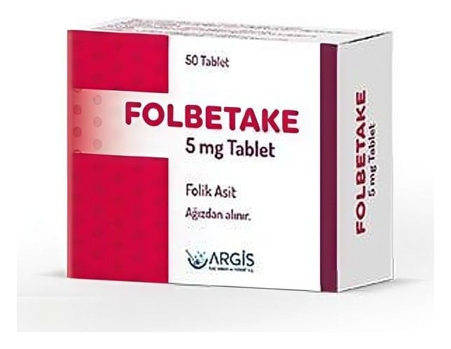

Folbetake 5 mg Tablet, 50 Adet

Ne için kullanılır
KT · Bölüm 1FOLBETAKE sarı renkli, yuvarlak şekilli, tek yüzü çentikli olan tablettir. İçerdiği folik asit maddesi bir çeşit B vitaminidir. FOLBETAKE, folik asit eksikliğine bağlı aşağıdaki hastalıkların tedavisinde kullanılmaktadır: • Besinlerin sindirim kanalından emilimi ile ilgili bazı problemler (tropikal veya non tropikal spru) • Beslenme tarzından kaynaklanan kansızlıklar (anemiler) • Hamilelerde, bebeklerde veya çocuklarda folik asit eksikliğine bağlı bir kansızlık çeşidi (megaloblastik anemi)